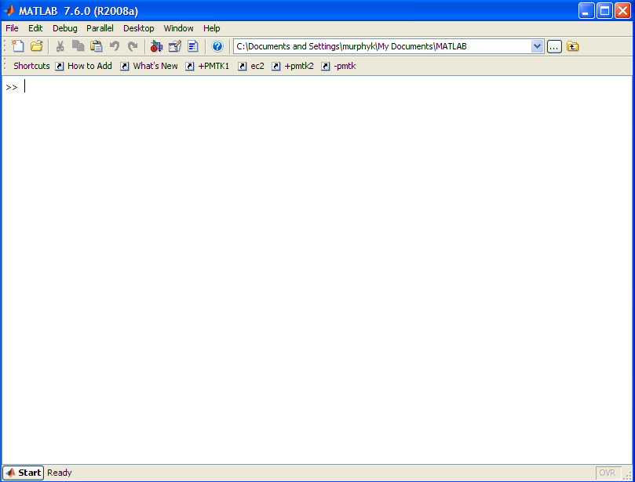
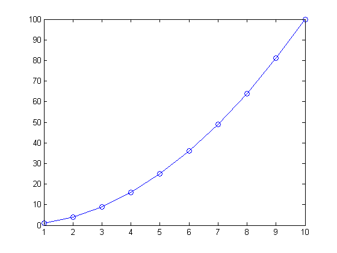
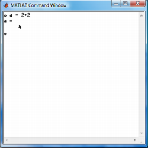
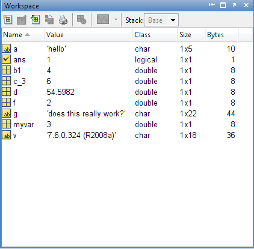
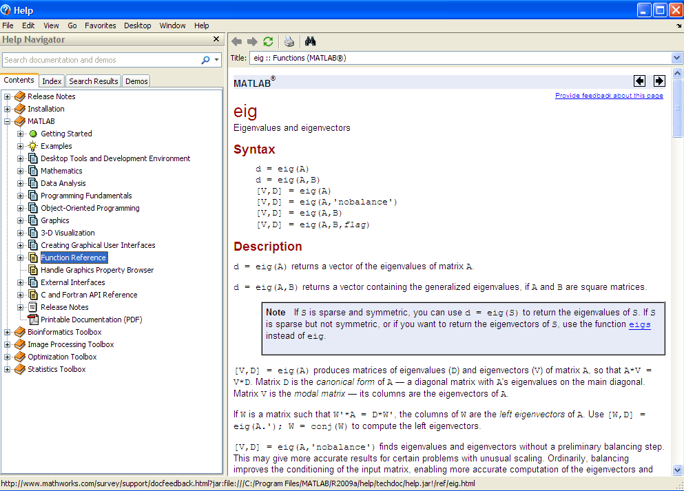
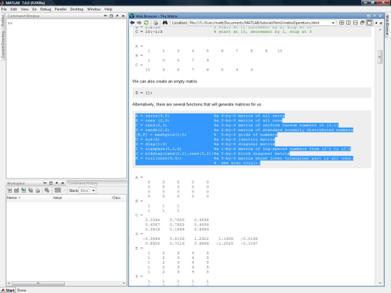

Getting Started
This section serves as an introduction to the Matlab environment and programming language as well as to this tutorial. It describes how to configure and start using Matlab, search for help, and how to perform file input and output.
Contents
What is Matlab?
Matlab is a programming environment as well as a high level, interpreted, dynamically typed language, supporting functional, object oriented, and event driven paradigms. It is well suited for numerical computation, particularly computations involving matrix operations and linear algebra.
Matlab has excellent support for data visualization and its concise and expressive syntax, as well as the plethora of predefined functions, results in a powerful environment excellent for rapid prototyping with minimal overhead.
Yet, Matlab is not just a scripting language for quick and dirty calculations. Recent versions have seen a dramatic increase for the support of large scale, highly structured code to rival C++, Java and the like. If you want the best of both worlds, Matlab's integrated java support lets you create and manipulate instances of java classes right in your Matlab programs. You can also call out to code written in C, C++, Perl, Fortran, or execute dos or unix system commands. Furthermore, Matlab code can be exported for use in Java, C, C++, and .Net programs, or as a stand alone application, mitigating its primary disadvantage - that it is not free.
As an interpreted language, some operations are slower than in a compiled language, particularly those involving loops. This too has improved in recent versions. In many cases, however, loops can be vectorized resulting in very quick code that invokes low level, highly optimized, compiled functions from the Matlab library. When the most computationally expensive parts of your program can be written this way, the speed of Matlab code rivals that of compiled languages.
Finally, with the addition of various toolkits, e.g. for Statistics, Bioinformatics, Optimization, or Image Processing, to name just a few, the Matlab environment can be extended for more specialized requirements.
Matlab® is a product of the The Mathworks™ company; for more general information, consult their website at http://www.mathworks.com/.
Starting Matlab
To launch Matlab double click on the Matlab icon or type Matlab at a command prompt. You should get a display something like the one below

You can immediately type things in to the command window and compute their value
1 + 1 % arithmetic sqrt(pi) % more arithmetic 'foo' % a string or(true, false) % a boolean value randn(2,2) % a 2d real matrix xs = 1:10; plot(xs, xs .^ 2, 'o-'); % a 1d plot
ans =
2
ans =
1.7725
ans =
foo
ans =
1
ans =
3.5784 -1.3499
2.7694 3.0349
 We explain the built-in functions and data types in more detail below.
Typing matlab -nojvm starts Matlab without the Java virtual machine, significantly reducing memory requirements at the cost of reduced functionality. None of the Matlab desktop windows are available in this mode, except for the command window. Here is how it looks.

Variables
We can create named memory locations to store data, called variables, very easily in Matlab.
myvar = 3
a = 'hello'
f = log10(100)
g = 2^10 - 1
myvar =
3
a =
hello
f =
2
g =
1023
Variable names must begin with a character and can contain up to 63 characters on most systems.
Matlab stands for "matrix laboratory", since it was originally designed as a front-end to various numerical linear algebra packages. Consequently it is easy to create vectors and matrices. For example,
a = 1:3 % 1d vector b = [1 2; 3 4] % 2d matrix c = ones(2,2,2) % 3d array
a =
1 2 3
b =
1 2
3 4
c(:,:,1) =
1 1
1 1
c(:,:,2) =
1 1
1 1
We discuss matrices and vectors in much more detail here.
In Matlab, scalars are really matrices of size 1x1. The basic 'scalar' types are double (real), char, and logical (boolean), although a number of (infrequently used) integer types also exist. The 'container' types are: numeric or logical arrays (matrices), cell arrays, structures, and objects.
Since Matlab is a dynamically typed language, we do not predefine the type of data we will store in a particular variable and can overwrite data of one type with data of another. Notice that the variable g, currently holds the number 1023. We will now assign it the following string.
g = 'does this really work?'
g = does this really work?
You can save all of the variables in a workspace to a file by typing save filename at the command prompt and reload them again with load filename.
Workspace
To see which variables you have defined, and what their size and type is, type whos
whos
Name Size Bytes Class Attributes a 1x3 24 double ans 2x2 32 double b 2x2 32 double c 2x2x2 64 double f 1x1 8 double g 1x22 44 char myvar 1x1 8 double xs 1x10 80 double
Alternatively, you can use a convenient graphical window called the workspace (see below). If it is not already visible, you can bring it up by typing workspace at the command prompt or by going to the desktop drop down menu. You can then drag and place it wherever it is convenient.

You can clear all the variables using
clear all
Command Window
You have already seen how to type expressions or commands into the command window. If you do not add a semicolon at the end of your commands, the return value will be displayed, otherwise the expression will be silently evaluated. For example, compare
a = ones(2,2)
a =
1 1
1 1
to this
a = ones(2,2); % nothing is displayed
The last typed command can be retrieved by selecting the command window and pressing the up arrow key on your keyboard. Pressing it several times scrolls you backwards through the history of typed commands. By first typing in part of the command before pressing the up arrow, only those statements that began with the typed text are displayed.
Furthermore, you can invoke Matlab's autocomplete feature by typing part of a command or function and pressing tab. A number of suggested options will appear. The same is true when editing files.
Help
One of Matlab's best features is its extensive library of help files. There are far too many built in functions to memorize and even if you remember the name, the exact syntax might allude you. You can bring up the help navigator by going to Desktop -> Help or search right from the command window. Typing help functionname at the command prompt displays that function's documentation as text in the command window, whereas doc functionname brings this up in the help window (this is usually preferable).

You can look for functions which contain a specified string in the first line of their documentation (see here for details) using lookfor string, as in this example.
lookfor quadratic
quadform - Implementation of the quadratic formula. lincontest6 - A quadratic objective function (from Optimization Toolbox) nnd8qf - Quadratic function demonstration. nnd9sdq - Steepest descent for quadratic function demonstration. quadprog - Quadratic programming. circustent - Large-Scale Quadratic Programming qpsub - solves quadratic programming problems.
Using this Guide
This tutorial so broken into several small chapters, which are themselves composed of a number of subsections. For the most part, the chapters are self contained and can be read in isolation as needed. As the code for the examples is embedded right into the document, it may be advantageous to open the tutorial in the Matlab web browser so that you can try out the examples as you read. Just type something like web yagtom.googlecode.com at the command prompt. You can then click on 'Desktop -> dock browser' so the browser will appear inside the matlab editor as illustrated below.

You can execute code by highlighting it on the web page and pressing F9. The statements are processed as though they were typed one at a time in the command window. Or you can cut and paste between different windows. Note that some of the examples use functions or data that are not built-in to matlab. These can be download here: http://code.google.com/p/yagtom/downloads/list. You should unzip these in some directory, and then add them to your matlab path by typing something like
addpath(genpath('C:\matlabTutorial\mfiles'))
Click here for more details on the matlab path.
Other Matlab resources
There are many other resources related to Matlab. We list some of them below.
- Getting started in Matlab, the official 260 page guide.
- official links to other tutorials
- matlab central, source of free software, of variable quality.
- matlab newsgroup, a place where you can post questions and people may answer them for you.